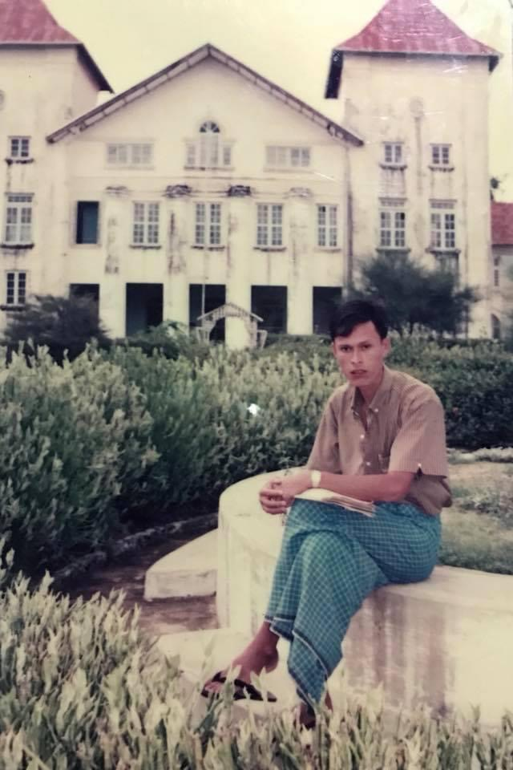

1970 — A Beginning ၁၉၇၀ — အစပြုခြင်း
Born on July 23, 1970 (ဝါဆိုလဆုတ် ၅ ရက် ၁၃၃၂) မွေးသက္ကရာဇ် - ၁၉၇၀ ခုနှစ်၊ ဇူလိုင်လ ၂၃ ရက် (ဝါဆိုလဆုတ် ၅ ရက် ၁၃၃၂)
In the small fishing village of Kyauk Sin, a boy was born who would later become one of the few people from the village to graduate with a university degree. ကျောက်ဆင် ဆိုတဲ့ တံငါရွာလေးမှာ မွေးဖွားခဲ့တဲ့ ဒီကလေးငယ်ဟာ နောင်တစ်ချိန်မှာတော့ တစ်ရွာလုံးမှာ လက်ချိုးရေတွက်လို့ရတဲ့ ဘွဲ့ရပညာတတ်တစ်ယောက် ဖြစ်လာခဲ့ပါတယ်။
